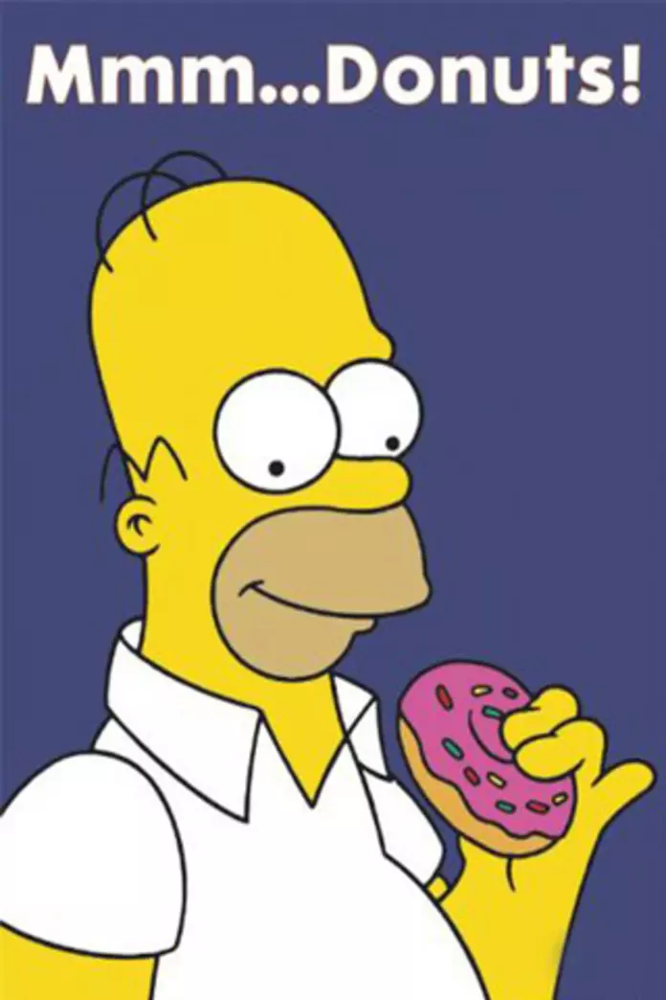

4. Mr. Macafee is hungry.
He notices a donut shop that is next to College Station High School,
and he buys 53 dozen glazed donuts.
How many donuts total did he buy if there are
12 donuts in a dozen?
Buying 53 sets of 12 donuts, Mr. Macafee essentially
buys 53\(\times\)12 donuts.
\(53\times12 = \textcolor{green}{636}\)

7. Mr. Tyler needs to write 45 questions for a test.
On the first day, Mr. Tyler writes 1 question. On the second day, Mr. Tyler writes 2
questions. On the third day, Mr Tyler writes 3 questions. How many days will it take for
Mr. Tyler to write his 45 question test?
This can be done two ways. The brute-force way is to write out a bunch of numbers starting from 1
and adding them to see
when you reach 45 total. Using this method, we see that \(1+2+3+...+9 = 45\), so the answer is
\(\textcolor{green}{9 \text{ days}}\)
That works pretty well, but what if we wanted to know how long before Mr. Tyler has 5000
questions? We can't sit and add all the numbers up
to 100, that would take forever! Instead, we can observe that the sum of the first \(n\) numbers
is \(\frac{n\times(n+1)}{2}\). For example,
the sum of the first 5 numbers is \(\frac{5\times6}{2} = 15\), and the sum of the first 100
numbers is \(\frac{100\times101}{2} = 5050\). To see how long it
takes Mr. Tyler to reach 45 questions, we see that the sum of the first \(\textcolor{green}{9}\)
numbers is 45.
18. If a triangle with sides of length 6, 8, and 10 has an area of 24, what would
be
the area of a triangle with sides of 3, 4, and 5?
The formula for the area of a triangle is \(\frac{b\times h}{2}\) where b is the length of the
base,
and h is the height of the triangle.
This shows us that if we half the base, the area gets halved. Similarly, if we half the height,
the area gets halved. If we half both
base and the height (as halving all the sides will do), we half the area twice. The
area of the new triangle will be \(\frac{1}{4}\) of
original area, or \(\textcolor{green}{6}\).
20. Masks come in packs of 3 and 4. What is the largest number of masks
that cannot be obtained by combining some number of each package? For example, it is impossible to
buy 5 masks, but it is possible
to buy 7 masks.
We are going to start at 4, and try to find possible numbers of masks that are impossible to buy.
But how do
we know when we have found the highest number that is impossible? As it turns out, if we
reach 3 number in a
row that are possible, every single number beyond those will be possible. This is because if we
have one number of masks
that is possible to buy, that number plus any multiple of 3 will also be a valid number of
masks, as we could simply buy masks
in packs of 3 to cover the ``extra'' that we included.
We know that 5 is impossible. 6 is possible with 2 packs of 3 masks. 7 is possible with 1 of
each pack, and 8 is possible with 2 packs
of 4 masks. 6,7, and 8, are three in a row that is possible, so we know that
\(\textcolor{green}{\text{5 is the highest impossible number}}\)
Fun fact: This type of problem inspired something called the Chicken McNugget Theorem, because
mathematicians were trying to find out what the
highest number of chicken nuggets they could not buy was.